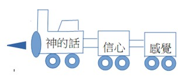

| 一、聖經經文: |
約翰福音 3:1-15 1. 有一個法利賽人，名叫尼哥底母，是猶太人的官。 2. 這人夜裏來見耶穌，說：『拉比，我們知道你是由神那裏來作師傅的；因為你所行的 神蹟，若沒有神同在，無人能行。』 3. 耶穌回答說：『我實實在在的告訴你，人若不重生，就不能見神的國。』 4. 尼哥底母說：『人已經老了，如何能重生呢？豈能再進母腹生出來麼？』 5. 耶穌說：『我實實在在的告訴你，人若不是從水和聖靈生的，就不能進神的國。 6. 從肉身生的，就是肉身；從靈生的，就是靈。 7. 我說，你們必須重生，你不要以為希奇。 8. 風隨著意思吹，你聽見風的響聲，卻不曉得從那裏來，往那裏去；凡從聖靈生的， 也是如此。』 9. 尼哥底母問祂說：『怎能有這事呢？』 10. 耶穌回答說：『你是以色列人的先生，還不明白這事麼？ 11. 我實實在在的告訴你，我們所說的，是我們知道的，我們所見證的，是我們見過的； 你們卻不領受我們的見證。 12. 我對你們說地上的事，你們尚且不信，若說天上的事，如何能信呢？ 13. 除了從天降下仍舊在天的人子，沒有人升過天。 14. 摩西在曠野怎樣舉蛇，人子也必照樣被舉起來；」 15. 叫一切信祂的都得永生。 |
| 二、經文背景: | 法利賽人: 在當時是很被尊重的, 因為他們不但在宗教上有知識, 而且也盡量的身體力行. 他們有固定的時間禱告, 讀經, 他們也小心地遵守律法書上一切的規定. |
| 三、經文探討: | 1. a. 這段聖經記載耶穌和甚麼人對話? 耶穌和尼哥底母對話, 他是一位老人、是法利賽人、是猶太人的官. (這說明他是一個在律法上經驗老道的宗教領袖.) b. 這個人來找耶穌的主要目的是甚麼? 他應該是來問耶穌如何才能見神的國和進到神的國 c. 您怎麼知道的呢? 從耶穌的回答去推敲的 2. a. 耶穌怎麼回答尼哥底母的問題? 耶穌說: “人若不重生, 就不能見上帝的國. “ 耶穌又說: "人若不是從水和聖靈生的就不能進神的國. “「重生」就是「再生產一次」, 耶穌用生產的比喻來回答尼哥底母的問題. 每一個人都曾經有過一次的生產。當他從母腹呱呱落地的時侯，那是第一次的生產。每一個人都必須經過這第一次的生產，然後方能進入這個世界，方能成為一個人。但他要進入神的國，要成為神的孩子，卻非經過第二次的生產不可。 重生並不是進到母腹中，然後從母腹中再生產一次。這樣的生產縱使再有幾十次幾百次，仍是毫無補益，因為「從肉身生的就是肉身」, 所以重生不是從肉身生，乃是從「水和聖靈」生。這裏所說的水不是物質的水，乃是指著神的道。我們都知道一切有生命的物都不能離了水；照這樣，屬靈的生命也不能離了神的道。水能潔淨一切污穢的東西；照這樣，神的道也能潔淨我們心身一切的污穢。 b. 尼哥底母能夠了解嗎? 為什麼? 耶穌是用人的生產來說明這是怎麼回事, 從肉身生的就是肉身而從靈生的就是靈. 但尼哥底母不太了解, 所以繼續問耶穌怎麼能有這事呢? 耶穌又用風來比喻一個人的重生的過程及之後的現象. 人的重生就像風一樣是感覺得到, 但卻不知從哪裡來往哪裡去. 而且每一個人重生的經驗都不一樣, 因為有的人是大風、有的人是颱風也有人是微風, 也就是不太有感覺但知道自己重生了. 3. 我們可以經驗的嗎？我們可以怎麼來經歷呢? 我們必須重生才能進, 而上帝的國只要我們願意相信並接受耶穌為我們生命的救主, 就能經歷得到. 但要怎樣重生呢？ 耶穌說: 『摩西在曠野怎樣舉蛇, 人子也必照樣被舉起來, 叫一切信祂的都得永生.』 這段的背景是以色列百姓被上帝從埃及為奴之地帶出來後, 在曠野行走, 而百姓因這路難行，心中甚是煩躁，就毀謗神和摩西說:『為甚麼把我們從埃及領出來、使我們死在曠野呢？這裏沒有糧，沒有水，我們的心厭惡這淡薄的食物。』於是耶和華使火蛇進入百姓中間，蛇就咬他們。以色列人中死了許多。百姓到摩西那裏，說：『我們毀謗耶和華和你，有罪了。求你禱告耶和華，叫這些蛇離開我們。』於是摩西為百姓禱告。耶和華對摩西說:『你製造一條火蛇，掛在杆子上，凡被咬的，一望這蛇，就必得活。』摩西便製造一條銅蛇，掛在杆子上，凡被蛇咬的，一望這銅蛇就活了。」(民21:4-9) 雖然被蛇咬以後的幾小時或是一兩天以內他還活著，照常動作，像常人一樣，但蛇的毒已經進入他的血脈，他已經列入死人之數。那個被火蛇所咬的人，在望銅蛇的時候無異乎又被生了一次，成為一個新人。他望銅蛇以後的身體仍是以前的身體，面貌也仍是以前的面貌，但生命卻不是以前的生命了。他以前的舊生命在他被火蛇所咬的時候已經完結了，他現在所有的新生命乃是在他看銅蛇的時候重新得著的。 世上的人類同古時的以色列人是一樣的犯了罪，一樣的觸動了神的震怒，一樣的喪失了生命。雖然世人現在還照常活著，實際上他們已經列入死人之數。但神卻向他們大發憐憫，正如祂在古時向以色列人大發憐憫一般。祂為他們預備了一個救法，不是一條銅蛇掛在杆子上，乃是一位聖潔無瑕疵的羔羊掛在木頭上 (銅蛇就是預表耶穌)。祂吩咐那些喪失了生命的以色列人去看銅蛇好得生命，祂也吩咐現在世上一切喪失了生命的世人來信耶穌好得生命。喪失了生命的以色列人在望銅蛇的時候怎樣重新得了生命，喪失了生命的世人也照樣在信耶穌的時候重新得著生命。 人怎麼可以從重生? 耶穌說, 只有到祂那裏, 祂是生命的賞賜者, 也是永生的給予者, 重生!必須相信祂! 相信祂是那位拯救者, 醫好我們的傷痛, 也更新我們的生命! 使我們有一個全新的人生!我要這樣的生命, 你要嗎? 我們的信心是建立在神和祂的話語 (聖經)上而不是建立在自己易變的感覺上或別人的話上. 因為神是信實可靠的, 祂的話是確實不變的. 想一想, 如果是感覺來帶領人生的方向, 會發生甚麼樣的事呢?  |
| 四. 經文運用: | a. 想想看, 您對自己生命現在光景的感覺是甚麼? 您覺得要怎樣才能解決問題? b. 耶穌在這裡提供了一個方法, 祂願意為你, 為我而死, 您是否願意接受祂所預備的恩典, 經歷重生, 享受全新的生命? 讓我們來仰望祂! |